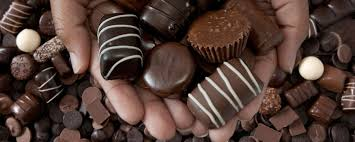

Chocolate is a typically sweet, usually brown food preparation of Theobroma cacao seeds, roasted and ground, and often flavored with vanilla. It is made in the form of a liquid, paste, or in a block, or used as a flavoring ingredient in other foods. Cacao has been cultivated by many cultures for at least three millennia in Mesoamerica. The earliest evidence of use traces to the Mokaya (Mexico and Guatemala), with evidence of chocolate beverages dating back to 1900 BCE.
 The seeds of the cacao tree have an intense bitter taste and must be fermented to develop the flavor.After fermentation, the beans are dried, cleaned, and roasted. The shell is removed to produce cacao nibs, which are then ground to cocoa mass, unadulterated chocolate in rough form. Once the cocoa mass is liquefied by heating, it is called chocolate liquor. The liquor also may be cooled and processed into its two components: cocoa solids and cocoa butter.
The seeds of the cacao tree have an intense bitter taste and must be fermented to develop the flavor.After fermentation, the beans are dried, cleaned, and roasted. The shell is removed to produce cacao nibs, which are then ground to cocoa mass, unadulterated chocolate in rough form. Once the cocoa mass is liquefied by heating, it is called chocolate liquor. The liquor also may be cooled and processed into its two components: cocoa solids and cocoa butter.
Much of the chocolate consumed today is in the form of sweet chocolate, a combination of cocoa solids, cocoa butter or added vegetable oils, and sugar. Milk chocolate is sweet chocolate that additionally contains milk powder or condensed milk. White chocolate contains cocoa butter, sugar, and milk, but no cocoa solids.Cocoa solids are a source of flavonoids and alkaloids, such as theobromine, phenethylamine and caffeine.
About
Chocolate has become one of the most popular food types and flavors in the world, and a vast number of foodstuffs involving chocolate have been created, particularly desserts including cakes, pudding, mousse, chocolate brownies, and chocolate chip cookies. Many candies are filled with or coated with sweetened chocolate, and bars of solid chocolate and candy bars coated in chocolate are eaten as snacks. Gifts of chocolate molded into different shapes (e.g., eggs, hearts) have become traditional on certain Western holidays, such as Easter and Valentine's Day.